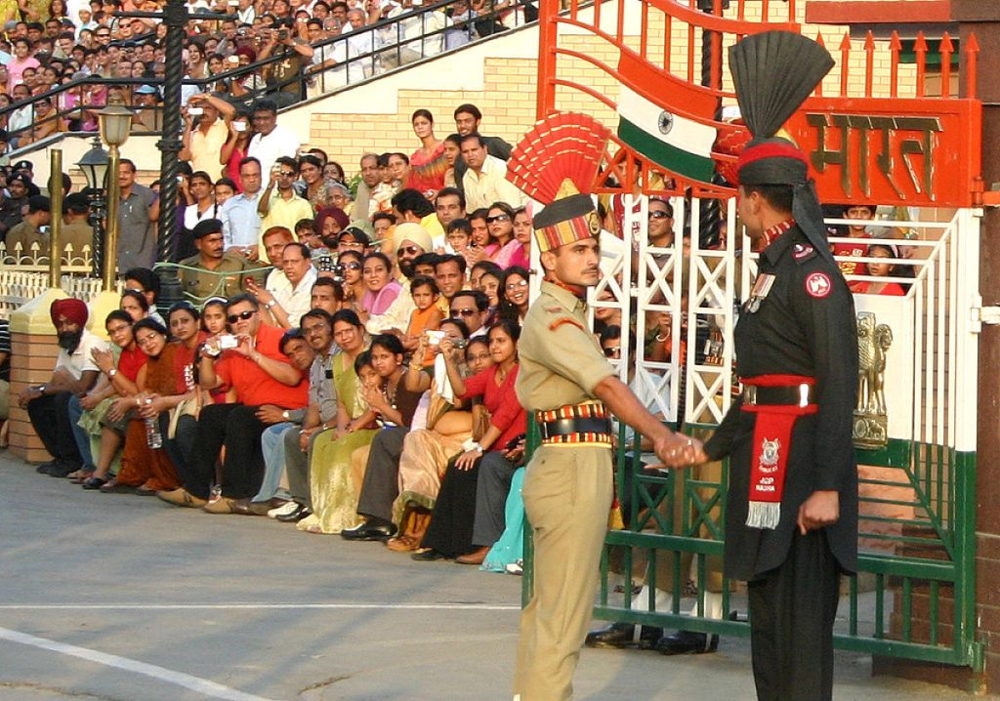
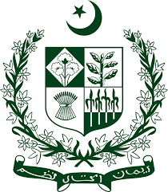
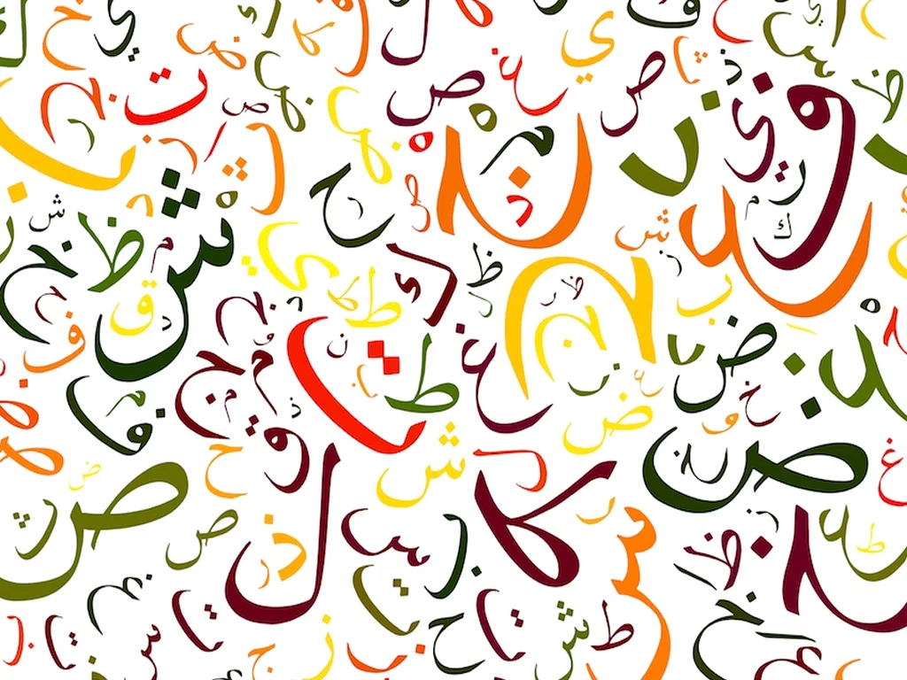
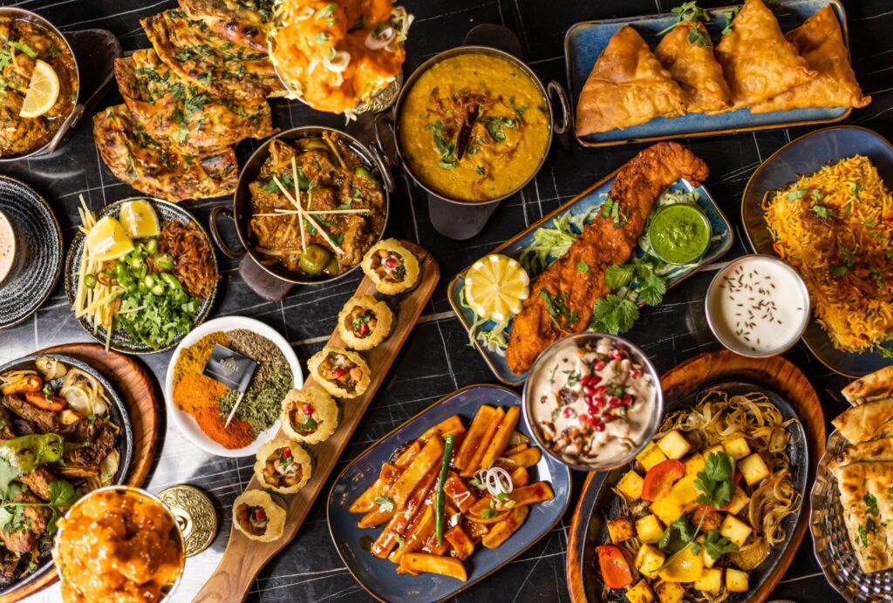
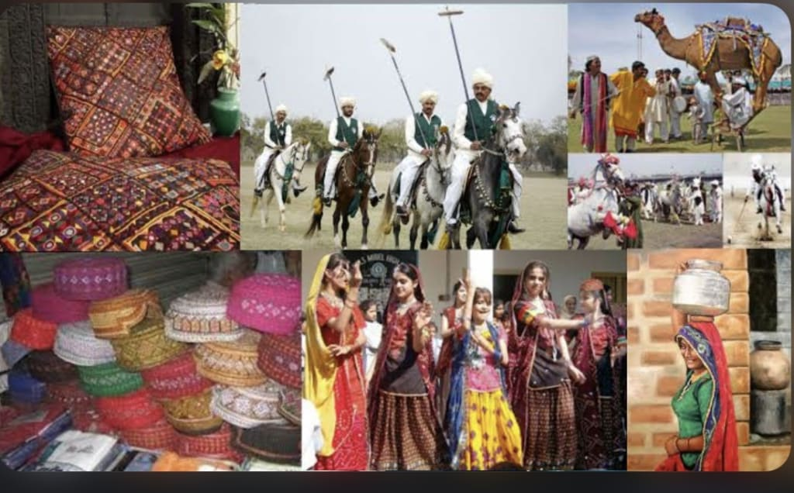
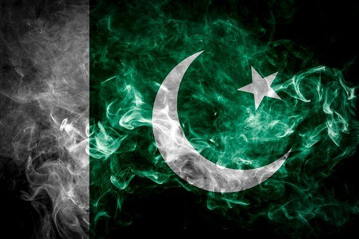

Pakistan Content Page
پاکِستان زِندہباد
- Pakistan is a South Asian country, officially the Islamic Republic of Pakistan, bordered by China, Afghanistan, Iran, and India.
- The country comprises of 4 provinces: Punjab, Sindh, Balochistan, and Khyber Pakhtunkhwa.
- The capital of Pakistan is Islamabad, while Karachi is the largest city.
- The modern history of Pakistan was shaped by the British, who arrived as traders with the British East India Company in the 18th century. This period of imperialism was a time of great violence and gave way to Indian Uprisings against the British oppressors.
- Demands were made for both independence and the creation of a Muslim state, to which Britain acceded prior to their withdrawal in 1947.
- The process of departure was not straightforward, however and the ensuing bloodshed was greatly due to the poor management of the carving up of the region into India and Pakistan by a UK based civil servant who had never previously visited the region.

National Symbols
Learn all about Pakistan's national symbols, such as the flag, it's meaning and origin, Pakistan's national anthem, also known as 'Qaumi Tarana', and get an insight into the army of Pakistan.

Language
Learn about the national language of Pakistan and also of the other different languages spoken in each of the country's provinces and the regions the languages have been influenced from.

Food
Learn about Pakistan's food sources, what the locals eat for breakfast, lunch and dinner, about Pakistan's street food, snacks, and drinks.

Culture and Tradition
Learn about the deep rooted culture and traditions of Pakistan, including information about beliefs, celebrations and events, gender roles, clothing and fashion, arts, music and dance, literature, and sports.

Interesting Facts
Learn some random but just as interesting facts about Pakistan.
